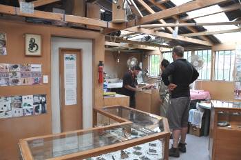
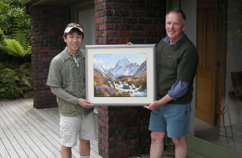

釣行日誌 ＮＺ編 「翡翠、黄金、そして銀塊」
鰐部さん、翡翠と絵を買う
2010/11/25(THU)-2
河口から車に戻り、ブリントさんの家へ戻る前に、鰐部さんが奥さんと娘さんたちにお土産を買っていくということで、ホキティカの町のちょっとはずれにある Jade（翡翠）の工房に寄ることとなった。その工房は、Jagosi という名前で、小さなガレージを改造して造ったものらしかった。翡翠の彫刻家である Aden Hogland さんは、がっしりとした体格の若者で、ディーン君の友達ということだった。町中の工芸品店では、翡翠の工芸品が割高だということで、この工房兼直売所を紹介してくれたのだ。工房の中には、翡翠の原石、作品が並べられたショーケース、作業机の上の彫刻道具類が所狭しと並べられ、アットホームな感じである。

彫刻家のホグランドさんと鰐部さんは、いろいろと相談して、お土産のデザインを決めていた。今日注文すれば、鰐部さんが帰るあさってまでには出来ているそうだ。僕は翡翠を買うほどのお金もないし、お土産を買うべき人もいないので、店内の様子を見るだけで楽しんだ。ホグランドさんの言うところによると、工房の名前の Jagosi というのは、Jade,Gold,Silver という三つの単語の合成だそうである。翡翠、金、そして銀である。金や銀の細工も手がけるホグランドさんならではの、洒落た名前である。鰐部さんの注文が終わったので、三人は工房を後にした。
ディーン君のお父さん、ブリント・トロレイ氏の家は、ウィットコム・テラスという町はずれの高台にあり、ホキティカの町並みに加えて遙かマウント・クックを望める見晴らしの良い邸宅である。そこへ鰐部さんとともにおじゃまして、朝のお茶を楽しむ。ディーン君はこの家で育ったのだが、今は結婚して、少し離れた場所に自分の家を建てているのである。今朝の釣りのことを含め、四人の釣り談義に花が咲き、シーラン・ブラウンの強烈な引きや、スプリングクリークの鱒の狡猾さについて面白おかしい話しが続いた。
続いてブリントさんが、一枚の絵を出してきて、ポーチのスタンドに架けた。マウント・クックを背景に、山肌を流れる小渓流を描いたその絵は、鰐部さんが日本のご両親へのお土産として、以前からブリントさんに注文しておいた一枚なのである。今日初めてこの絵を見た鰐部さんは、その出来上がりに感動して、とてもうれしそうだった。僕も、ブリントさんの絵を一枚持っているが、今でも見るたびにその絵を買ったときの旅の光景がよみがえり、心を温かくしてくれる。やはり芸術家の腕というものは、素晴らしいものだなぁと改めて感動した。

釣行日誌ＮＺ編 目次へ
サイトマップ
ホームへ
お問い合わせ